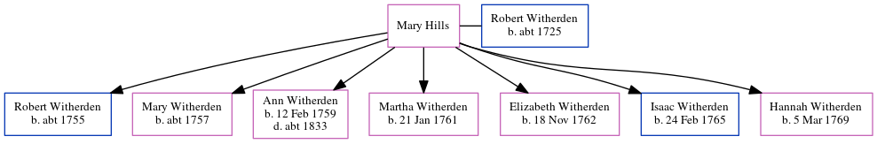

Mary Witherden (née Hills)
[ Home ] | [ Calendar ] | [ Surnames Index ] | [ Census Index ] | [ Family History ]Mary Hills was the 5 times great-grandmother of Nigel Horne and married Robert Witherden (with whom she had 7 children: Robert, Mary, Ann, Martha, Elizabeth, Isaac and Hannah) in St Peters, Thanet, Kent, England on Apr 22, 1755.
Children
- Robert was born c. 1755
- Mary was born c. 1757
- Ann was born on Feb 12, 1759
- Martha was born on Jan 21, 1761
- Elizabeth was born on Nov 18, 1762
- Isaac was born on Feb 24, 1765
- Hannah was born on Mar 5, 1769
Family Tree
Generated by ged2site. Last updated on Jun 11, 2024